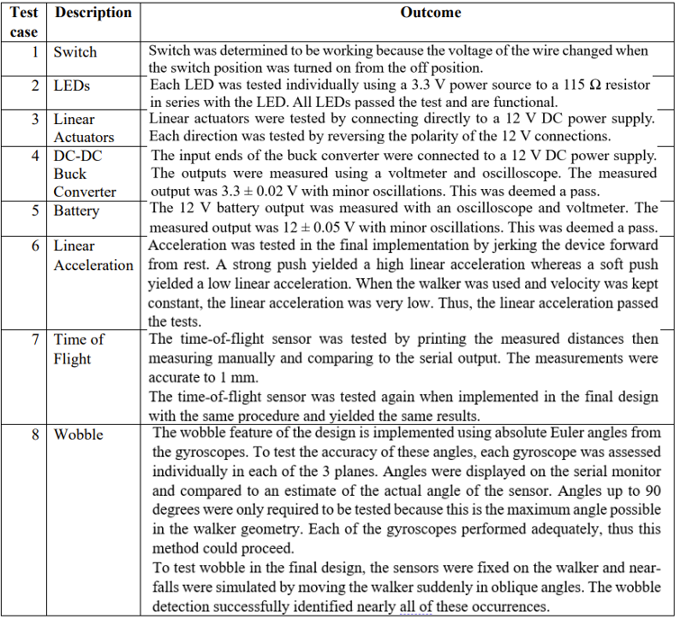

The Problem
Seniors in nursing homes who use assistive mobility devices (AMDs) and have an increased risk of falling require an intermediate AMD without the stability limitations of a walker or autonomy limitations of a wheelchair to increase their quality of life, physical activity, and safety.
The Impact
Approximately 25% of seniors in nursing homes use wheelchairs, limiting their physical activity,
and leading to dependence on others. Wheelchair-use is also correlated with an increased risk
of depression, possibly due to restricted mobility and ability to socialize with others. The social
impacts of our design were to increase the autonomy of users, and consequently, their quality of life. The safety and health impacts of our design were therefore to decrease fall risk for users
and allow for physical activity.
The Solution
Design a mechatronic device with automatic electrical and mechanical resistance braking that is size adjustable and provides improved upper body support from a traditional walker. Ensure that the device initiates automatic braking if enhanced acceleration is detected, extreme wobbling is sensed, or an obstacle is detected.
Preliminary Design Iteration
Many initial concepts were explored, including seated walkers and walkers attached to the user. The preliminary design was a collapsible standing walker, which was modeled in CAD and 3D printed:

Preliminary CAD of collapsible design

Preliminary prototype (PLA)
Once the prototype was built, it proved extremely unstable due to an imbalance in bending moments. This exercise reaffirmed the value of rapid prototyping.
Feedback from stakeholders, including nurses from assisted living homes, emphasized that no device could restrain the user,
while biomechanics experts advised that a collapsible design would likely be too weak and not feasible within the project timeframe.
Based on this guidance, the collapsible mechanism was removed from the final design.

Imbalance in bending moment
The Final Solution
Design a mechatronic device with automatic electrical and mechanical resistance braking that is size adjustable and provides greater upper body support

Size ajustability diagram
Adherence to Regulatory Standards
- The device followed ISO 11199-3:2005, covering strength, durability, stability, braking, adjustment.
- IEC 80601-2-78:2019 compliance ensuresd electrical and mechanical safety for medical devices, including protection from shocks, fire, moving parts, and electromagnetic interference.
- CAN/CSA-Z604-03 (R2008) specified Canadian requirements for transportable mobility aids (design, labeling, testing, performance).
- The prototype used aluminum; full compliance requires final materials, exact dimensions, and complete testing.
Final Electrical Outcomes
The final electrical system used sensors to detect speed, wobble, and nearby obstacles, allowing the walker to identify potential fall risks.
Based on these inputs, linear actuators automatically applied either light or strong braking resistance.
User interaction was kept simple through power and calibration switches, along with traffic-style LED feedback: when the walker is powered on, the green LED turns on;
during minor braking, the yellow LED activates; and during major braking, both yellow and red LEDs illuminate. All components were powered by a 12 V battery and
controlled by an ESP32 microcontroller, which could also send braking data to a PC over Wi-Fi for monitoring and analysis.

Location of electrical components on mechanical assembly

Electrical logic flow chart

Component purpose diagram

Major and minor braking

Electrical assembly for linear actuators used to drive automatic resistance braking
Electrical Validation
Various test cases were trialed to validate the electrical design:
